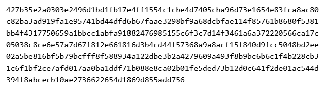

v2 (30 September): the n=3 finding below, turned into a law that could be wrong — sealed before the test, then tested. v1 is further down.
Does rendering text as an image cost fewer or more tokens than the text itself, for a vision model reading it back? This was measured, not guessed — real Anthropic API token counts for both sides, a contamination-controlled fidelity check, and a verdict that isn't forced to be a clean "yes" or "no" because the real data isn't.
| pre-registered rule | held-out result |
|---|
| shape | cheaper as an image | mean image vs text | where the samples came from |
|---|

| sample | chars | text tokens | image px | image predicted | image real | error | cheaper |
|---|
| sample | chars | text tokens | image (px) | image tokens (formula) | image tokens (real) | image vs text | fidelity |
|---|
real = Anthropic's live count_tokens endpoint · formula = Anthropic's published estimate, ceil(w×h/750) · contamination-controlled = genuine cold vision read · contaminated = Kar authored the content, a weaker check
Anthropic's published formula underestimated the real measured image cost in all 3 samples — by +5.0% to +13.7%. Small sample, but consistent in direction. Budget a margin above the formula; don't treat it as exact.
For content Kar wrote (the prose and structured samples), a "correct" read could be memory, not vision — the source was already in context. The holdout row is the rigorous one: 10 rows of {random word, random 4-digit code}, generated by a seeded script whose console output never printed the actual values. The rendered image was viewed and transcribed first; the ground-truth file was opened only afterward, to compare. Result: 10/10 exact match.
The pure layout math is gated — the empirical parts (real API calls, the vision read) are not,
and this page doesn't pretend otherwise.
node --test kernel.test.mjs — 18 tests: the documented image-token formula pinned
against a real-world example (Anthropic's own 1092×1092 max-edge figure), and the pure text-layout
math behind the renderer, clause-isolated.
node tools/witness.mjs mutate kernel.mjs --timeout 15000 --cap 400 --test node --test kernel.test.mjs
— 23/23 mutants killed, zero baselined survivors.
Full reproduction steps (the real API calls, the renderer, the contamination-controlled fidelity
check) are in findings.json.